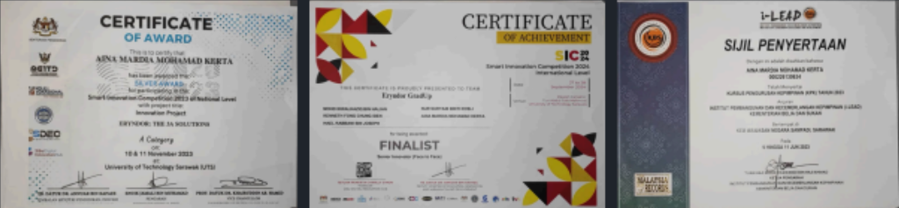
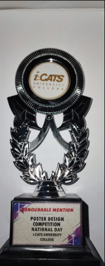
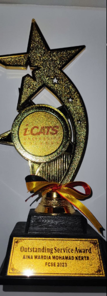
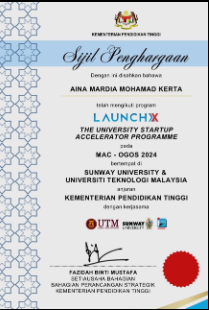
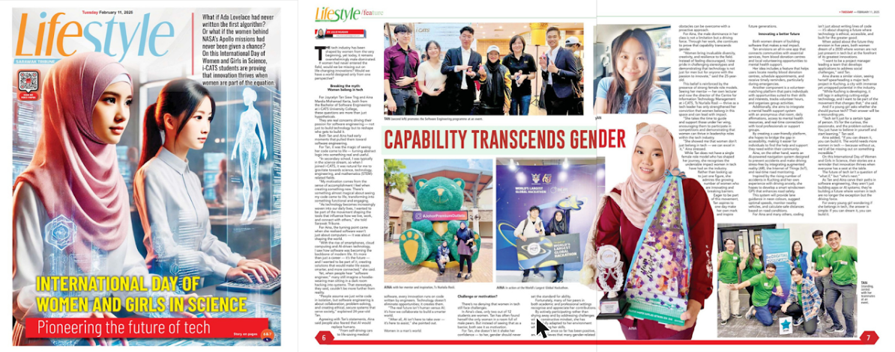
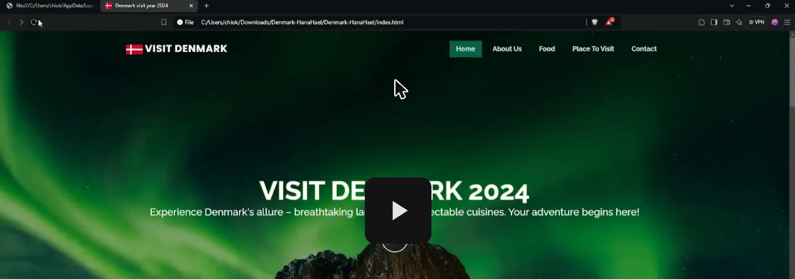
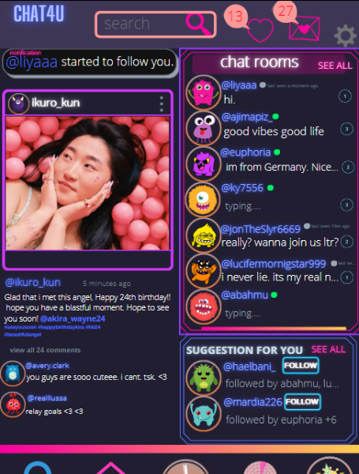
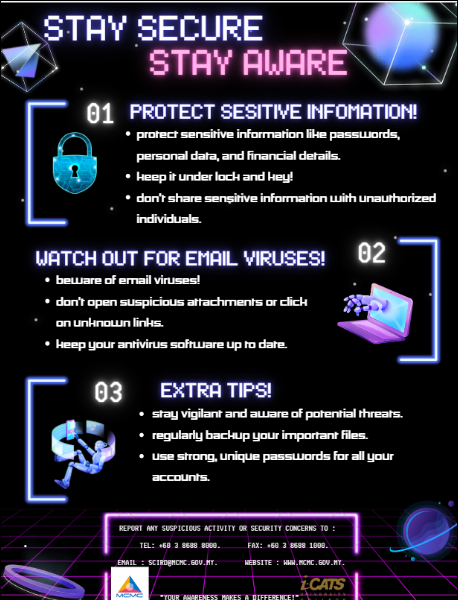
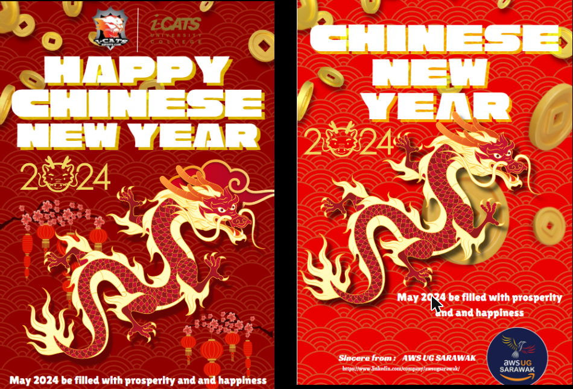
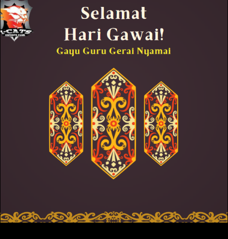

Certificates & Awards
The full certificate shelf
Dean's List, competition certificates, committee recognitions and programme completions.

Trophies & Programmes
Honours worth framing
A national poster design honourable mention, the LaunchX startup accelerator, and an outstanding service award.

Honourable Mention — Poster Design Competition
National Day · i-CATS University College

Outstanding Service Award
FCSE · 2023

LaunchX — University Startup Accelerator Programme
Sunway University & UTM · Mac–Ogos 2024
In The Press
Sarawak Tribune — full spread
The complete Lifestyle feature behind "International Day of Women and Girls in Science: Pioneering the future of tech."

Read the full feature on the front page, or directly at the Sarawak Tribune.
Design Work
Posters, UI concepts & graphics
A spread of design practice — a tourism website concept, a social app UI, an awareness infographic, and festive posters.

Visit Denmark 2024
Tourism website concept

Chat4U
Social app UI concept

Stay Secure, Stay Aware
Cybersecurity infographic

Chinese New Year 2024
i-CATS & AWS UG Sarawak posters

Selamat Hari Gawai
i-CATS Esports Club poster